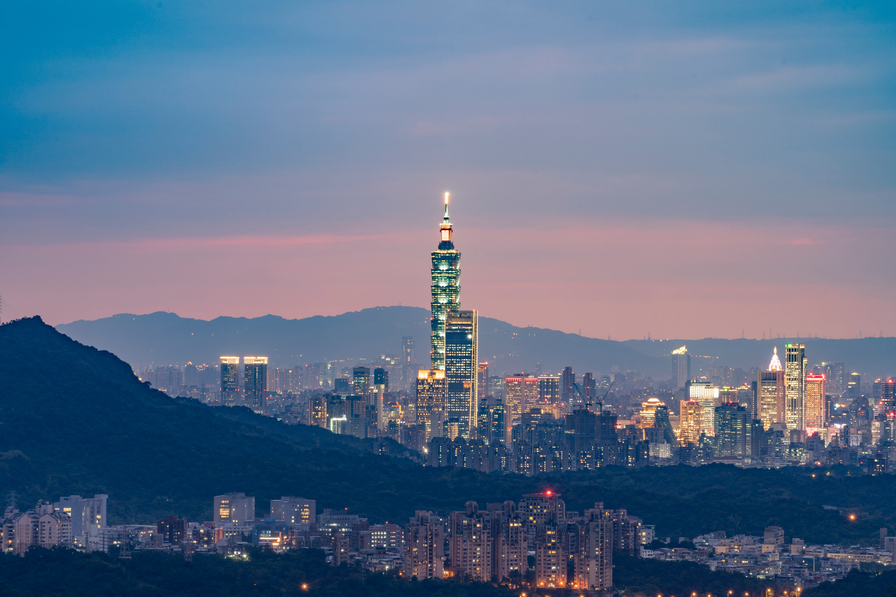

Travel GO
- Travel& History
- Taiwan -Taipei
- South Korea -Seoul
- Singapore
- Finland
#Taipei

Taipei (/ˌtaɪˈpeɪ/), officially Taipei City, is the capital[5] and a special municipality of Taiwan (officially the Republic of China, "ROC"). Located in northern Taiwan, Taipei City is an enclave of the municipality of New Taipei City that sits about 25 km (16 mi) southwest of the northern port city Keelung. Most of the city lies on the Taipei Basin, an ancient lakebed. The basin is bounded by the relatively narrow valleys of the Keelung and Xindian rivers, which join to form the Tamsui River along the city's western border.